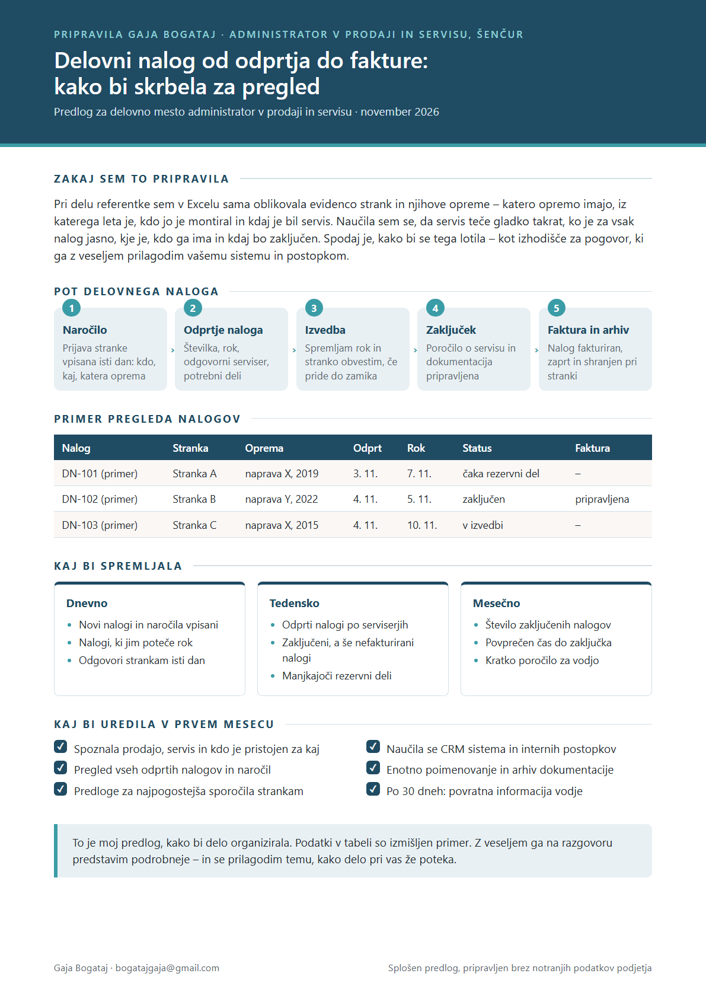

Pozdravljeni
Delo, ki ga opisujete – od naročila kupca do zaključenega delovnega naloga in urejenega arhiva – je zelo blizu tistemu, kar sem leto dni delala kot komercialna in administrativna referentka. Doma sem v Škofji Loki, slabih 20 minut od Šenčurja, in lahko začnem takoj.
Kaj prinašam vašemu naročniku
Evidence strank in servisovV Excelu sem sama oblikovala evidenco strank in njihove opreme: katero opremo imajo, iz katerega leta je, kdo jo je montiral in kdaj je bil servis.
Tabele in procesiDiploma iz poslovne informatike: SQL, Tableau in risanje poslovnih procesov (Bizagi, iGrafx, Visio).
Stranke in izvajalciKorespondenca s strankami po e-pošti, klici na recepciji in info točki UKC, dogovarjanje rokov z zunanjimi izvajalci.
Pripravila sem za vas
Kratek predlog, kako bi vodila pregled delovnih nalogov od naročila do fakture in kaj bi spremljala dnevno, tedensko in mesečno.

Kontakt
Z veseljem se vam predstavim osebno.